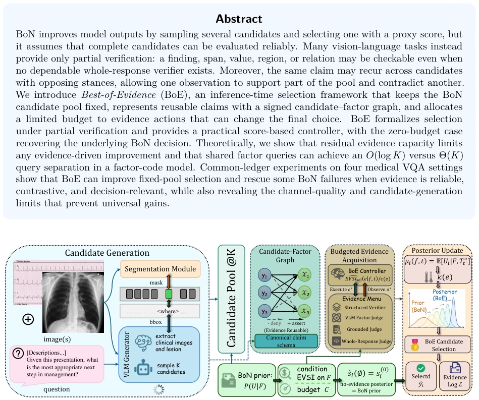
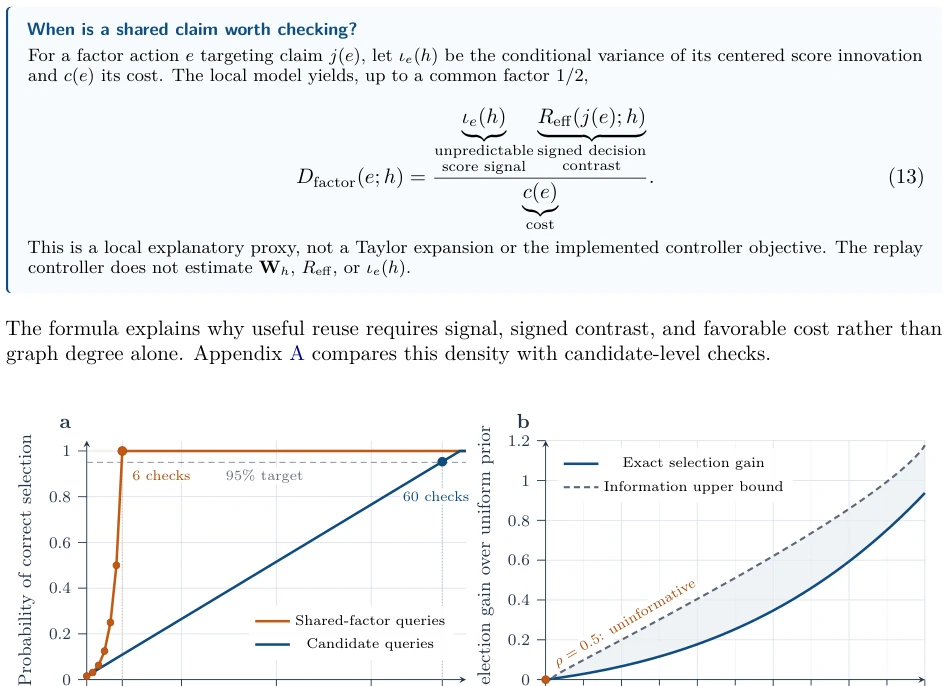
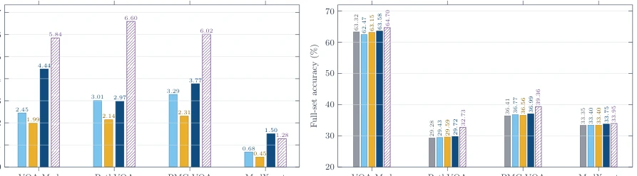

BoE equips BoN with a microscope, attempting to find the optimal solution amidst the chaos of "partially correct" answers. The theory is compelling, EVSI calculations are logical, but experimental results are somewhat "lukewarm", with full set improvement under 1%. This is like cutting 16 apples to taste one bite to pick the sweetest, only finding 0.5% more sweetness. However, it is honest, admitting candidate pool quality is the fatal flaw; no amount of evidence can save a question without a correct answer. For VQA tasks like "describing pictures", BoE proves local validation is more reliable than blind scoring, but do not expect it to revive the dead. It reveals the dual bottlenecks of evidence channel quality and candidate generation capability. Although it failed to achieve universal gain, it provides a structured framework for selection problems under partial verification, counting as adding a layer of "anti-hallucination" filter to BoN, although this filter is a bit expensive.
Existing BoN methods assume reliable evaluation of complete candidates [2, 3], but in VLM tasks, answers are often "partially correct, partially wrong" [13, 14]. For example, modality correct but lesion wrong in report, or chart values correct but comparison wrong. Traditional verification is either all correct or all wrong, lacking granularity. Process Reward Models focus on steps [5, 7], but do not solve the shared evidence reuse problem. BoE aims to solve the mismatch between verification granularity and candidate objects, utilizing limited budget to acquire evidence that can change decisions, rather than simply pursuing accuracy. Many vision-language tasks cannot provide reliable complete response validators, only checking fragments, regions, or relations. This granularity mismatch leads to a dilemma in selection: candidates are complete objects, verification is costed local views. BoE attempts to optimize final selection by reusing local evidence under a fixed candidate pool, filling the gap between coarse scoring and fine verification.
方法Method
BoE 流程分四步：1. 固定生成 K 个候选，不改变生成器；2. 构建 Signed Candidate-Factor Graph，将候选项拆解为可验证的因子（claim），记录支持/反对关系，形成有向图；3. 预算化证据获取，基于 EVSI 估算每个检查对最终选择的预期价值，优先选择高价值动作；4. 更新后验得分并选择。创新点在于：1. 有向图允许单次观测同时支持/反驳不同候选，实现证据复用，避免重复检查；2. 控制器使用判别加权分数更新，而非校准概率，兼容零预算退化为 BoN，且无需校准后验概率；3. 理论证明共享因子查询在因子码模型下比候选查询更高效（O(log K) vs Θ(K)）。它不假设每个候选池形成精确的潜在因子码，而是利用有符号共享压缩验证。证据菜单包含结构化验证、VLM 判断和全响应评估，根据预测的选择价值分配预算。
BoE process divides into four steps: 1. Fix generation of K candidates, do not change generator; 2. Build Signed Candidate-Factor Graph, decompose candidates into verifiable factors (claims), record support/oppose relations, form directed graph; 3. Budgeted evidence acquisition, estimate EVSI for each check's expected value on final selection, prioritize high-value actions; 4. Update posterior scores and select. Innovations lie in: 1. Directed graph allows single observation to simultaneously support/oppose different candidates, achieving evidence reuse, avoiding duplicate checks; 2. Controller uses discriminative weighted score update, not calibrated probability, compatible with zero budget degenerating to BoN, and no need for calibrated posterior probability; 3. Theoretical proof shows shared factor queries are more efficient than candidate queries under factor code model (O(log K) vs Θ(K)). It does not assume each candidate pool forms exact latent factor code, but uses signed shared compressed verification. Evidence menu includes structured verification, VLM judgment, and full response evaluation, budget allocated based on predicted selection value.

Figure 1: Overview of Best-of-Evidence under partial verification. From left to right, a VLM generates a fixed candidate pool, with segmentation used only to prepare grounded views. The cheap BoN context initializes the ranking. Candidate claims are merged into a signed candidate–factor graph, allowing one observation to affect multiple candidates in different directions. Under a budget, BoE selects among heterogeneous checks, updates the ranking with the acquired evidence, and returns the selected candidate together with an evidence log.

Figure 2: Exact consequences of the finite constructions. a, Six shared-factor queries recover a six-bit code; candidate queries need 60 checks to exceed 95% success. b, In the four-factor noisy model, the exact gain ρ4 −1/16 stays below the information upper bound and vanishes with an uninformative channel.
Tested on 4 medical VQA datasets (VQA-Med, PathVQA, PMC-VQA, MedXpertQA-MM), using Qwen models. Baselines include Raw BoN, random factors, full response verification. Metrics are Accuracy and Rescue Rate. Results: BoE improved 0.26-0.58% on full set, Rescue rate significantly better than random on BoN failure set (VQA-Med 4.44% vs 2.45%). Found evidence gain limited by channel discriminability (κ) and candidate pool coverage. If no correct answer in pool, evidence cannot fix. Proves evidence effective only when reliable, contrasting, and relevant. MedXpertQA-MM shows even with score sharpening, accuracy gain is small, indicating evidence must move scores to decision-relevant direction. Experiments reveal channel quality and candidate generation limits of partial verification, support theoretical residual information upper bound. Additionally, performance varies greatly across datasets, indicating universal gain hard to achieve, need task-specific optimization.

Figure 3: Selection performance at C = 16. Left, rescue rates on the policy-aligned Majority- Wrong subsets; raw BoN is omitted because its accuracy is zero by definition, and subset sizes are shown below the dataset names. Right, full-set selected-candidate accuracy; the vertical axis begins at 20%. In both panels, the myopic label-guided allocator is a non-deployable, factor-only diagnostic with no upper-bound interpretation. BoE value labels are bolded for visual emphasis.